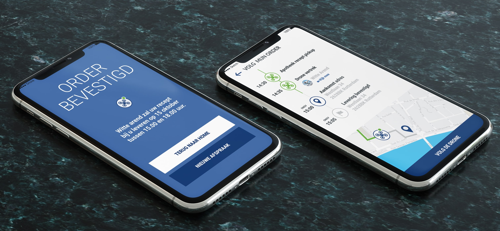

- 
Last Mile Drone Delivery
Behaald cijfer: 8,0
Gebruikersbehoefte Onderzoek
Figma
Divergeren & Convergeren
Testen
Prototypes Maken
User Interface Design
Wunderpeople is samen met The Future Mobility Network bezig met een onderzoek naar de mogelijk- en onmogelijkheden van drone bezorging in de stad. Het doel is om erachter te komen wat de meest gebruiksvriendelijke manier is om drone bezorging te laten werken, gericht op de customer journey en de interactie tussen mens en systeem.
OnderzoekOm dit te bereiken hebben wij eerst onderzoek gedaan bij de doelgroep en concurrenten d.m.v. interviews, deskresearch en benchmarks. Er zijn interviews gehouden met de doelgroep, literatuur onderzoek gedaan en de directe concurrenten apps zijn getest en beoordeeld. Door middel van dit onderzoek kreeg ik diepgaand begrip voor de gebruikers. Deze inzichten hielpen mij te focussen op wat écht het verschil ging maken. Ik vergaarde diepe inzichten door de juiste vragen op de juiste manier te stellen. Hierdoor kwam het gedrag, de wensen en behoeftes van de gebruiker naar voren.
ResultaatEen app met een logische vormgeving die voldoet aan systeemeisen en de ideale customer journey heeft voor de eindgebruiker. Zonder moeilijk te doen, kan je nu ook je medicatie thuisbezorgd krijgen. Alle informatie is waar je deze verwacht en het gebruiken van deze app voelt goed. Gebruikers zouden deze app aanbevelen aan vrienden. Dit resultaat is behaald doordat er veel verschillende lo-fi concepten getest zijn en er daarom gemakkelijk (en op tijd) bijgedraaid kon worden naar perfecte prestaties.
Vorige case Volgende case